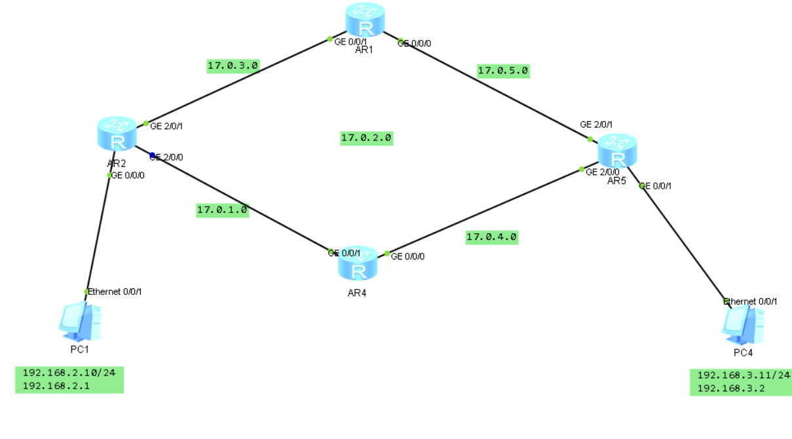

路由与路由器专题

路由器基础知识
RAM
$Random~Access~Memory$
其中存储的内容会在断电或重启后丢失，一般用于临时存储路由器配置文件，具体地说，其存储的数据内容有：
- 路由表(Routing Tables)
- ARP高速缓存(ARP Cache)
- 快速交换缓存(Fast Switching Cache)
- 报文缓存(Packet Buffering)
- 报文保持队列(Packet Hold Queues)
NVRAM
$Non-Volatile~RAM$
其中存储的内容在断电或重启后不会丢失，一般用于存储备份或启动初始化时的配置文件
Flash
本质是通过电子可擦除可编程只读内存(Electronically Erasable Programmable Read-Only Memory, EEPROM)实现的，用于存储思科网络操作系统(Cisco Internet Operating System, Cisco IOS)，不需要取出闪存芯片也可以实现软件更新，可以存储多个版本的IOS备选，断电数据保留
ROM
$Read-Only~Memory$
存储供电自测(Power On Self Test, POST)内容，加载Cisco IOS的初始化程序已经操作系统软件
接口
$Interface$
接入路由器和连出路由器的通道，安装在主板或者单独的模块上
路由器系统启动步骤
整体上来看，路由器系统的启动分为三步，分别是：
- 运行供电自测POST检查硬件
- 检查CPU，内存和网络接口端口的基本操作是否正常
- 软件初始化
其中软件初始化可以分为以下五步
- ROM中的通用初始化加载程序在CPU上执行
- 配置寄存器中存储操作系统的部分激活
- 操作系统镜像被加载
- NVRAM中的配置文件加载进入主存并开始执行
- 如果NVRAM没有有效的配置文件，就执行问题驱动初始配置例程，也称为设置模式(setup mode)
路由过程
路由转发方式
一般来说，路由器从一条数据链路转发报文到另一条数据链路主要使用两个基本功能，分别是路径选择(Path Determination)和交换(Switching)
后者使路由器能从一个接口接收报文，并从另一个接口将其发送；而前者使路由器能够选择最合适的接口来发送报文
路由器通过报文地址的网段部分(network portion)进行路径选择，决定下一跳将其转发给哪一台路由器；离目的地址最近的路由器通过报文地址的主机ID（节点）部分(node portion)来将其发送到正确的主机
静态路由
使用管理员手动输入的配置运作路由协议，由于动态路由会梳理出整个网络的结构，出于安全性考虑，网络的一部分常用静态路由进行配置。当一段网络只有一个入口时，使用静态路由即可满足需求，因为其变化相对较少，管理员易于管理，这样的网络部分称为末端网络(stub network)
可管理距离(Administrative Distance)
指的是路由信息源的可信程度，为0~255的数值，数值越高，可信程度越低，因此静态路由的可管理距离一般很低（默认取值为1）
动态路由
使用可以自动适应网络拓扑与拥塞程度变化的路由协议，可以为数据传输导向尽量避免网络拥塞
动态路由的运作依赖于路由器间交换信息的主动路由协议，以及两个基本的路由功能：路由表维护(maintenance of a routing table)和路由信息分发(distribution of knowledge to other routers)
收敛
当网络拓扑发生变化后，处于同一网络拓扑中的路由器需要交换信息以适应变化，持续到所有路由器的路由信息同步为止，如果网络中路由表的信息不再发生变化则称为收敛(Convergence)，此同步过程会中断路由的运作，收敛时间受到采用的主动路由协议的影响
主动路由协议分类
距离矢量协议(Distance-Vector Protocol)
不允许路由器掌握整个网络的拓扑信息，其算法也称为Bellman-Ford算法，原理是在路由器之间传递路由表的拷贝
其主要的问题是路由环路问题

在图中如果PC4的连接突然断开，则AR5更新路由表信息后就会将其拷贝发送给AR4和AR1，但由于此时AR2的路由表信息尚未更新，如果此时它向AR4发出路由表的拷贝信息（PC4经过2跳可达），则AR4的路由表信息就会被更新为PC4经过3跳可达；接下来AR1的PC4不可达信息传递给AR2，AR5的信息被更新为PC4经过4跳可达；再下一步AR1的信息更新为PC4经过5跳可达；再下一步AR2的信息更新为PC4经过6跳可达，一直重复循环，导致网络一直无法收敛，这个问题被称为计数到无穷(count to infinity)问题
第一种解决的方法是定义最大跳数(define a maximum)，即定义跳数大于15则认为不可达，由此引发的新策略称为路由毒化(route poisoning)，做法是当连接断开时不再将其从路由表中删去，而是将其跳数设置为16表示不可达，然后依次发送路由毒化的信息，同时不再接收与之相关的路由信息，当与之相连的路由器的下一台路由器发现该断开连接的网段已经不可达之后就向这台路由器发送一条反向毒化(poison reverse)信息确保整个网络内关于相关网段的路由都已修改为不可达，避免不可收敛
第二种解决的方法是水平分割(Split Horizon)，做法是如果路由表中的某条信息是由某个端口学习到的，就不再从这个端口发送与这个网段相关的更新的路由表信息，避免反复更新导致的不可收敛
第三种解决的方法是挂机计时器(Hold-on Timer)，做法是如果路由器收到路由表中某个网段不可访问的信息，就将它标记为不可访问，并启动计时器，在计时器时间内，如果收到与原路由一致或更好的路由信息就将其重新标记为可访问，如果更差则忽略，超过计时器的时间则将其彻底标记为不可达，计时器的时间原长于信息在整个网络中传播的时间，使网络连接断开的信息有充足的时间在整个网络中传播
链路状态协议(Link-State Protocol)
需要用数据库维护复杂的拓扑信息，使用的算法为最短路优先算法(Shortest Path First, SPF)，借助链路状态公告(Link-state Advertisements, LSAs)，拓扑数据库，最短路算法构成的SPF树（每个路由器以自己为根节点）来建出一张通用的整个网络中路径与端口的路由表，其建树步骤如下：
- 路由器之间交换链路状态公告(exchange LSAs)，每台路由器先于相邻的路由器节点交换
- 每台路由器平行地构建一个记录了网络中所有LSA信息的拓扑结构数据库(construct a topological database)
- 最短路算法计算网络的可达性(The SPF algorithm computes network reachability)
- 路由器列出最佳路径以及通向网络中所有目的地的各自端口，记录在路由表中
链路状态协议的使用有两个注意点，第一是路由器的处理和内存要求，对整个网络拓扑的梳理，计算与存储是比距离矢量协议更消耗处理器算力和主存的内存的；第二是网络的带宽要求，在建树阶段每个路由器都向网络中发送自己的LSA广播，对链路有一定的带宽要求
问题在于链路状态更新不同步，具体来说，以上面的图片为例
如果AR5与AR4之间的链路突然故障，则AR4与AR5都会发出链路状态改变的信息，由于距离的问题，AR2和AR1会同时收到这条消息，这是如果这段链路突然恢复，则AR4与AR5就会同时发送链路恢复的信息，有可能会导致AR2同时收到来自AR4的链路恢复信息和来自AR1的链路故障信息，解决的办法将在主动路由协议的专题中提到
DVP与LSP的比较
| Distance-Vector Protocol | Link-State Protocol |
|---|---|
| 对于网络拓扑的了解仅限于邻居 | 掌握整个网络拓扑的通用结构 |
| 从路由器到路由器累加距离向量 | 计算出到其他所有路由器的最短路 |
| 频繁定期的交换路由表，收敛慢 | 只在事件(状态发生改变)触发时更新，收敛快 |
| 交换路由表的拷贝 | 交换链路状态的改变情况 |
混合协议(Hybrid Protocols)
兼具DVP和LSP的特性，例如OSI的$Intermediate~System-to-Intermediate~System,IS-IS$和Cisco的$Enhanced~Interior~Gateway~Routing~Protocol,EIGRP$
主动路由协议典例
- $RIP(DVP)$
- $IGRP(Cisco’s~DVP)$
- $OSPF(LSP)$
- $EIGRP$
主动路由协议首要目标
- 最佳路由(Optimal Route)
- 效率高(Efficiency)，即使用最少的带宽和路由器处理资源
- 快速收敛(Rapid Convergence)
- 灵活性(Flexibility)，能够应对多种情况
默认路由
$Default~Route$
默认路由可以进一步缩短路由表的长度，其功能是当报文发向路由表中不存在的网段时就将其发往默认路由指向的网段